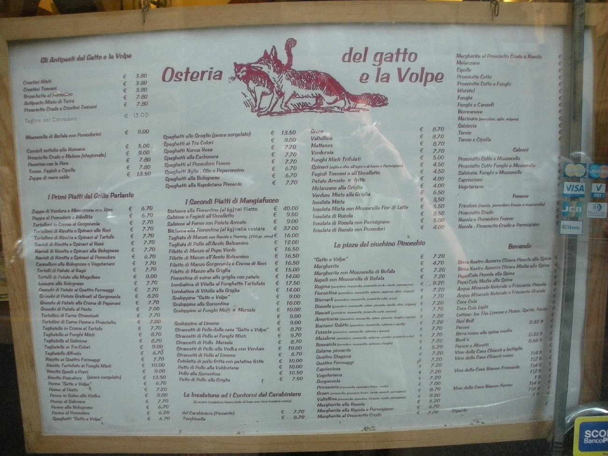

Travel Recommendations
Here are some of my travel recommendations if you're looking for inspiration!
Here are some of my travel recommendations if you're looking for inspiration!
Centrally located, this hostel is a great place to stay at when you want to explore everything the city has to offer. It is a quick walk from the Metro, so you can easily travel to all of the sights. With a rooftop terrace, it is a great place to spend your evenings and prepare for a fun night.
If you're looking for a fun hostel in a great neighborhood, Wombat's is the place to be. This hostel is very clean and provides an excellent underground pub. This hostel is just a quick walk away from the legendary Tower of London and Tower Bridge. It's a great place to start your adventure into London.
This hostel may be on the mainland, but it will give you the most bang for your buck! Anda is conviently located just a quick 3 minute walk away from Venezia Mestre train station, which will take you to the island city of Venice. Anda also has a great bar and lounge area, to kick back and relax after a long day of roaming the romantic canals of Venice. If you're looking to save a bit of cash, Anda is the place for you!
If you want fantastic and authentic Italian food, this is the place to go if you're in Florence. It has the best gnocci and pasta, and for a great price!
Click menu to download
When you go to London, it is not all about meat pies and fish & chips. London has some of the best Indian food in the world. One of my favorite place's is Dishoom. They have a great atmosphere with an intimate bar and seating arrangement. When it comes to the food, it is fantastic! You will want to have seconds.
Click menu to download
If you're looking for something other than tapas and paella, Pikio Taco is the place to go! They have fantastic Mexican style tacos with a Spanish twist. They have a great atmosphere and a wonderful staff and will make you feel at home.
Click menu to download
{kind=link}